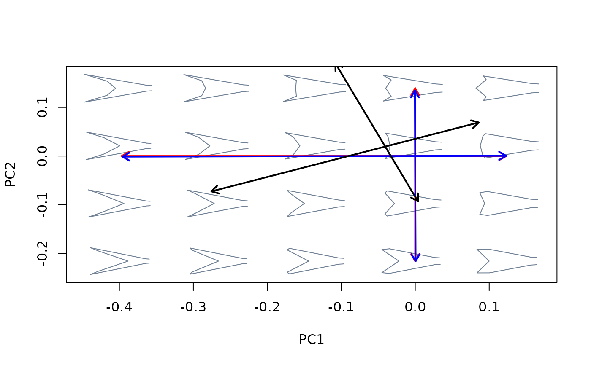

Project one or more morphometric axes (i.e., linear combinations of shape variables) as vectors into an existing bivariate morphospace.
proj_axis(mspace, obj, axis = 1, mag = 1, pipe = TRUE, type = 3, ...)An "mspace" object.
An object containing either a multivariate ordination of class
"prcomp", "bg_prcomp", "phy_prcomp" or "pls_shape", or a
"mlm" object fitted using stats::lm().
Optional; which axis from obj should to be projected?
Numeric; magnifying factor for representing shape transformation.
Logical; is the function being included in a pipe?
Integer; type of arrows (0 = no arrow; 1 = pointing
towards the maximum; 2 = pointing towards the maximum, 3 =
pointing in both directions).
Further arguments passed to graphics::arrows().
If a plot device with a morphospace is open, a straight line marking
the scores representing shapes at the extremes of the morphometric axis is
projected into morphospace. If pipe = FALSE those scores are
returned invisibly. If pipe = TRUE the supplied "mspace"
object will be modified by appending a $shape_axis slot to
$projected, as well as by adding some graphical parameters (stored
into the $plotinfo slot), and returned invisibly.
This function is primarily aimed at graphically representing
morphometric axes (estimated using either linear models or multivariate
ordination methods) into an existing morphospace for heuristic exploration
of patterns in the data. It can also be used to extract theoretical shapes
at the extremes of those axes, although ax_transformation() does the
same thing in a more flexible and straightforward way.
Axes computed by fitting linear models to shape data can differ in extension from axes obtained through supervised ordination using the same supervising variable (i.e., shape transformations will be either stretched or truncated) due to the former assuming that the explanatory variable has been measured without error. Also, the former will not be necessarily centered.
For statistical analysis of axes (e.g., trajectory analysis) their vector
coefficients can be extracted directly from slope coefficients stored in
"mlm" objects or eigenvector coefficients stored in the
$rotation slot returned by multivariate ordination methods.
#load and extract relevant data, packages and information
library(magrittr)
library(geomorph)
data("tails")
shapes <- tails$shapes
logsizes <- log(tails$sizes)
species <- tails$data$species
sp_shapes <- expected_shapes(shapes, species)
tree <- tails$tree
links <- tails$links
##Compare (orientations) axes resulting from different version of PCA
#first perform the different variants of PCA on tail shape data
pca <- prcomp(two.d.array(shapes))
bgpca <- bg_prcomp(two.d.array(shapes), groups = species)
phypca <- phy_prcomp(two.d.array(sp_shapes), tree = tree)
#then project the first 2 axes from each into morphospace
mspace(shapes, links = links, mag = 0.7, axes = c(1,2)) %>%
proj_axis(obj = pca, axis = 1, col = "red", lwd = 2) %>%
proj_axis(obj = pca, axis = 2, col = "red", lwd = 2) %>%
proj_axis(obj = bgpca, axis = 1, col = "blue", lwd = 2) %>%
proj_axis(obj = bgpca, axis = 2, col = "blue", lwd = 2) %>%
proj_axis(obj = phypca, axis = 1, col = "black", lwd = 2) %>%
proj_axis(obj = phypca, axis = 2, col = "black", lwd = 2)

##Linear models vs ordination methods
#compute intraspecific allometric axis detrend_shapes, using lm and
#pls_shapes
detr_shapes <- arrayspecs(
detrend_shapes(lm(two.d.array(shapes) ~ species)),
p = 9, k = 2)
intrasp_allo_mod <- lm(two.d.array(detr_shapes) ~ logsizes)
intrasp_allo_pls <- pls_shapes(shapes = two.d.array(detr_shapes),
X = logsizes)
#compute intraspecific allometric axis using tapply, lm and pls_shapes
sp_logsizes <- tapply(logsizes, species, max)
intersp_allo_mod <- lm(two.d.array(sp_shapes) ~ sp_logsizes)
intersp_allo_pls <- pls_shapes(shapes = two.d.array(sp_shapes),
X = sp_logsizes)
#generate basic morphospace, add intraspecific (red) and interspecific (blue)
#axes for lm models
mspace(shapes, links = links, mag = 0.7, axes = c(1,2)) %>%
proj_axis(obj = intrasp_allo_mod, col = "red", lwd = 2, type = 2) %>%
proj_axis(obj = intersp_allo_mod, col = "blue", lwd = 2, type = 2)
#> Warning: zero-length arrow is of indeterminate angle and so skipped
#for pls ordination
mspace(shapes, links = links, mag = 0.7, axes = c(1,2)) %>%
proj_axis(obj = intrasp_allo_pls, col = "red", lwd = 2, type = 2) %>%
proj_axis(obj = intersp_allo_pls, col = "blue", lwd = 2, type = 2)
#> Warning: zero-length arrow is of indeterminate angle and so skipped